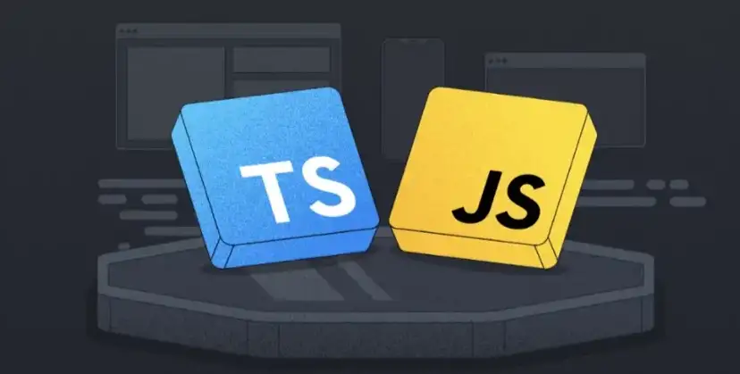
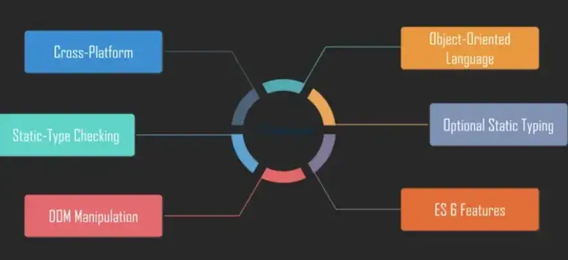
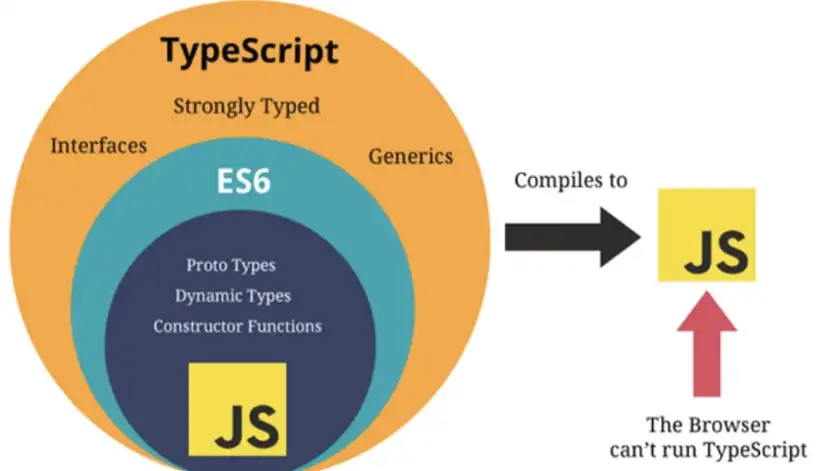

Why was TypeScript developed when we already have JavaScript? What are the advantages of TypeScript and should it replace JavaScript altogether? If you are curious to find out the answers, look no further! This article will also include an example to clarify key points, a review of their differences, and additional resources for extended learning along with some relevant memes. Let’s dive right in!
 Why was TypeScript developed when we already have JavaScript?Although JavaScript was originally developed as a client-side programming language, developers realized it could also be used as a server-side programming language. As JavaScript grew overtime it became more complex and was not able to reach its full potential to succeed at the enterprise level as a server-side technology. As a result, TypeScript was developed to bridge this gap. TypeScript is a superset of JS and was developed to overcome code complexity for large projects. Essentially, all JavaScript code is also valid in TypeScript and is JavaScript, but with additional features.
 What are the advantages of TypeScript?Let’s review the additional features of TypeScript that filled the gaps and answered many of the problems developers were facing with JavaScript.
Optional Static Typing :JavaScript is a dynamically typed language, meaning that the software will not treat type differences as errors up until runtime. This often resulted in a lot of bugs and frustration. However, TypeScript offers optional static typing. Once static typing is declared, a variable does not change its type and can only take in certain values. The compiler alert developers of any type-related errors (syntax or semantic), which results in early bug detection.
Early Bug Detection :Let’s expand on why this is a notable advantage. With the compiler checking our code, warnings and errors caught for us at the time of development, decreasing the chances of bugs and unexpected behavior at runtime. Checking type correctness at compile time also helps with refactoring code quickly with confidence. Overall, this feature helps avoid accidental mistakes that developers otherwise would have to comb through manually in JavaScript.
Improved Readability :Since JavaScript offers few readability add-ons, there are a lot of errors that require manual detection, which can sometimes take a while. TypeScript static reading and interface on the other hand, increases code optimization. Interface in TypeScript can be used to define a type (string, boolean, number…) and also to implement it in the class, resulting in more informative codebase. Defined types and clear categories for variable declarations not only improve readability, but the stability of the code overall.
Code Optimization :While JavaScript lacks several important features, TypeScript is thought to have better code organization and object-arranged programming procedures. Along with improving quality of the code, TypeScript also is capable of increasing development speed with the following capabilities:
What are the key differences between JS and TS?
JavaScript
TypeScript
With all these extra fancy features, shouldn’t we ditch JavaScript altogether and just use TypeScript for our projects right? Well, the short answer is no. TypeScript is not a replacement for JavaScript and is not suitable for all types of projects. JavaScript is still the most favorite client-side scripting language. Since JavaScript is directly run on the browser, it’s easier to run, refresh and debug small code chunks. JavaScript is a great choice when flexibility is a priority because it allows you to create functionality without sticking to the same rules. However if you are dealing with a large code base which you want to bring to a single standard while prioritizing speed, TypeScript is your best bet. As your code grows and becomes more complex to handle, there is more potential for errors, which is better to be caught during compile time.
 Conclusion :We’ve learned that TypeScript was developed for large applications that trans compiles to JS, which also follows an OOP language structure that supports its features (like classes, interfaces, namespaces, and inheritance). Overall, TypeScript is easy to maintain, great for code organization and enhances project productivity. This filled the gaps and answered many of the problems developers were facing with JavaScript. We also reviewed why JavaScript is still preferred when working on small web projects, while TypeScript is the ideal choice when handling complex projects. Although not every developer needs to know TypeScript, it is worth having some experience.